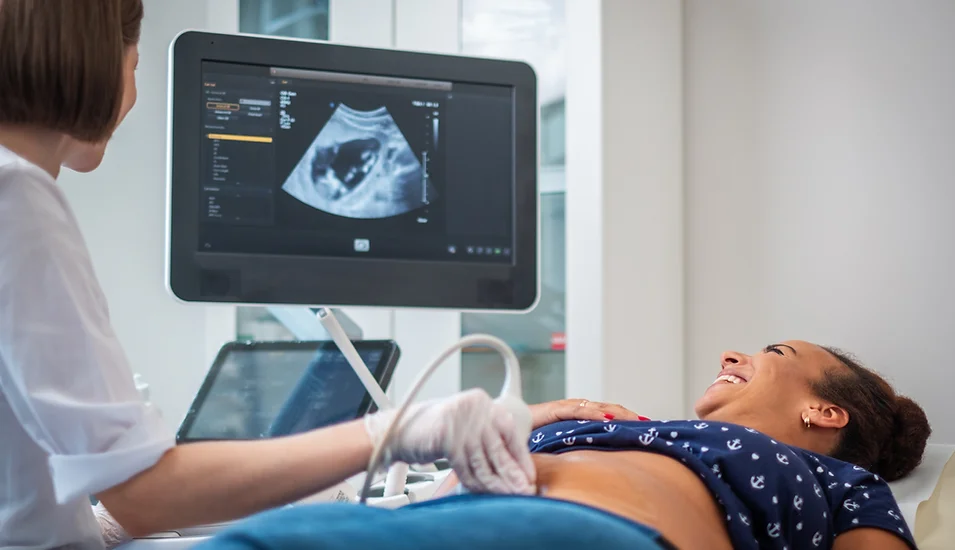

Ultrasound examination
Ultrasound examination utilizes high-frequency sound waves to
produce real-time images of internal structures. This
non-invasive diagnostic tool is valuable for assessing organs,
tissues, and fetal development in a safe and painl-ess
manner.